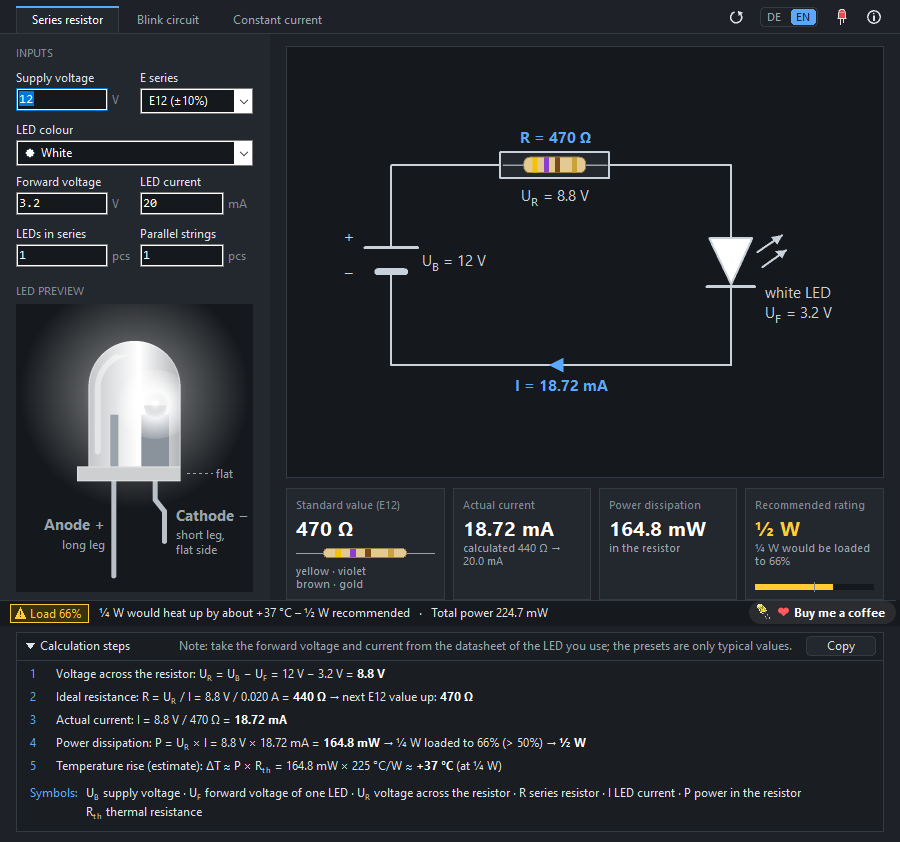
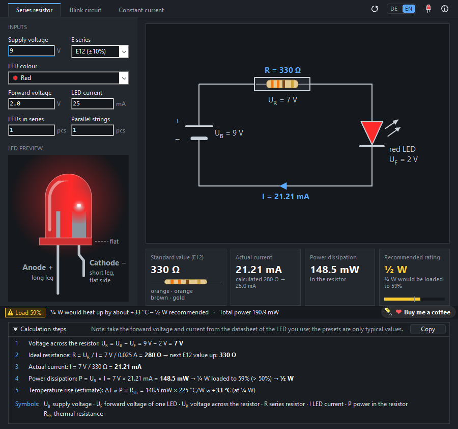
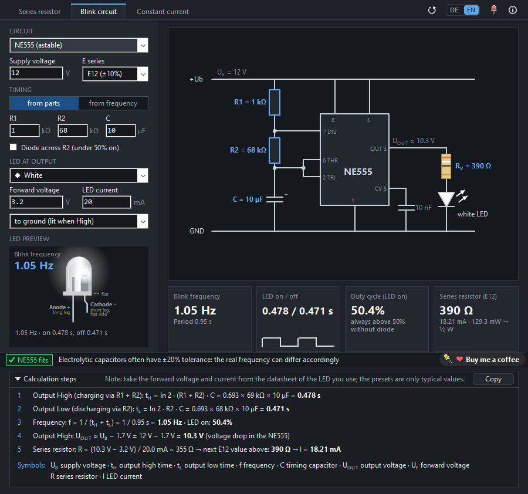
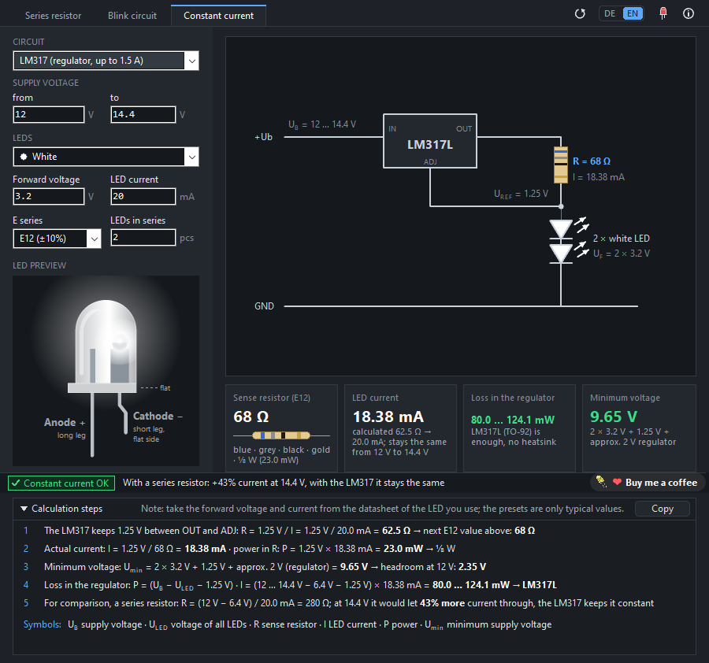
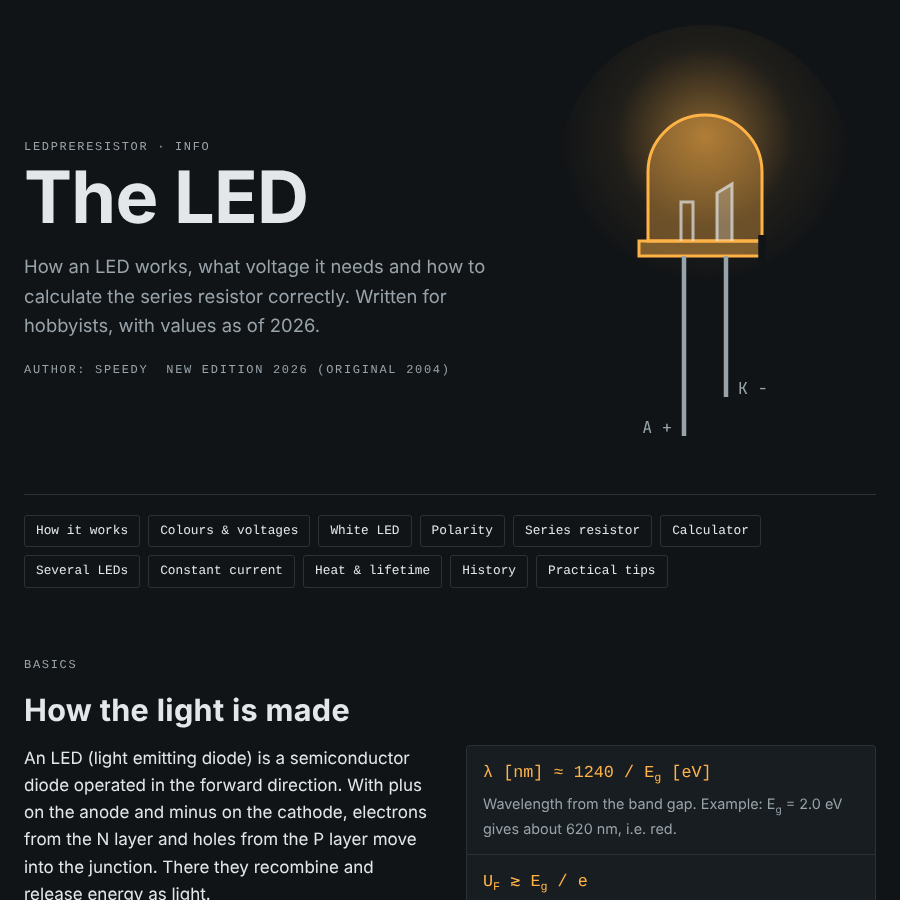

The right resistor
for every LED
Enter the supply voltage, pick the LED colour and the current. LedPreResistor finds the next standard resistor, shows its colour bands, the real current and the power, and tells you which resistor size to use. Every step of the calculation is shown with your own numbers. One small program for Windows and Linux, free and open source.
- Free & MIT licensed
- Windows 10 / 11 and Linux
- One EXE, no installation
- Works offline
- E12, E24 and E96
- Blink circuits: NE555 and multivibrator
- Constant current: LM317 and two transistors

Everything at a glance
The result updates while you type. No button to press, no menu to search.
Standard value and colour bands
Always the next higher value from the E12, E24 or E96 series, so the LED never gets more current than planned. The resistor is drawn with its colour bands: four bands for E12/E24, five for E96.
Power and the right size
Real current, power in the resistor and in the LEDs. LedPreResistor recommends ⅛, ¼, ½ or 1 W and warns from 50 % load, with an estimated temperature rise of the resistor.
The calculation, step by step
A fold-out panel walks through the five steps with your values: voltage across the resistor, ideal value, standard value, real current, power and warming. Ideal for learning and for checking.
LED preview
A realistic 5 mm LED in the selected colour, with anode, cathode and the flat side labelled, so you solder it the right way round. In the blink circuit tab it blinks with the calculated times.
Schematic with all values
Supply, resistor and LED in a clear circuit diagram, with voltage, current and resistance at every part. Several LEDs in series, and several equal strings in parallel, each with its own resistor.
LED info built in
Press F1 for “The LED”: how an LED works, colours and forward voltages, polarity, series resistor, constant current and practical tips. Opens in your browser, also offline.
Warns before it gets hot
A resistor that runs at its limit gets very hot and ages quickly. LedPreResistor keeps an eye on it.
- Green, yellow, red in the status bar: load of a standard ¼ W resistor and the estimated warming
- From 50 % load the next bigger size is recommended, as experienced builders do
- Too much power for a resistor? It says so and suggests a constant current source
- Copy the result with the Copy button or Ctrl+Shift+C: result, calculation steps and symbol legend as plain text, for your notes or a forum post
- Presets for red, yellow, green, blue, white and infrared LEDs, or your own forward voltage from the datasheet
- Comma and dot both work as decimal separator; arrow keys and the mouse wheel change values

Make your LED blink
Since version 2.3: the “Blink circuit” tab calculates the two classic hobby blinkers, with schematic, calculation steps and checks.
- NE555 astable: on and off time, frequency and duty cycle from R1, R2 and C, optionally with a diode across R2 for short flashes
- Multivibrator with two BC547: two LEDs blinking alternately, symmetric 1:1 by default
- The other way round: enter the frequency (NE555) or how long each LED stays on (multivibrator), and get resistors from the E12 series with the times they really give
- Series resistor for the LEDs, colour bands and a schematic with every value
- Checks for supply range, output current, transistor saturation and base reverse voltage
- The LED preview blinks with the calculated times and shows the frequency in Hz

Constant current for your LEDs
New in version 2.4: the “Constant current” tab keeps the LED current steady, even when the supply voltage changes, for example 12 to 14.4 V in a car.
- LM317 as current source: sense resistor R = 1.25 V / I from the E series, its power, the minimum supply voltage and the loss in the regulator; LM317L or LM317 suggested, with a heatsink hint where needed
- Two transistors: sense resistor R_S = 0.6 V / I and base resistor R_B; T1 is suggested by current and power (BC547, BC337 or BD139)
- Supply as a range “from … to”: shows how little the current changes, compared with a simple series resistor
- Schematic with every value, calculation steps, symbol legend and warnings, like the other tabs
- The LED info explains constant current, heat and heatsinks in its own chapter

How it works
Three steps from the datasheet to the right resistor.
- Download and unzipGet the ZIP from GitHub and unzip it anywhere, for example to
C:\Tools\LedPreResistor. No installation, no admin rights, no extra packages. On Linux: unpack the tar.gz and run./LedPreResistor. - Enter your valuesSupply voltage, LED colour (or the forward voltage from the datasheet), LED current and how many LEDs are in series.
- Read the resultStandard value with colour bands, real current, power and the recommended size. Open the calculation panel to see how it was worked out.
Example: 12 V supply, one white LED (3.2 V), 20 mA. Calculated 440 Ω, next E12 value 470 Ω, real current 18.72 mA, 164.8 mW in the resistor. A ¼ W resistor would be 66 % loaded, so use ½ W.
Learn while you calculate
The built-in LED info is a short guide for hobbyists, rewritten for version 2.0 with values as of 2026, in English and German.
- How an LED makes light and why it needs a resistor
- Colours, wavelengths and typical forward voltages
- Anode or cathode? How to tell
- Several LEDs: in series or in parallel
- Constant current, warmth and service life, practical tips
- With a small calculator on the page itself

Questions and answers
Is LedPreResistor really free?
Yes. LedPreResistor is open source under the MIT licence. There are no ads, no account and no paid version. If you like it, you can leave a voluntary donation on Ko-fi.
Why always the next higher standard value?
A lower value would let more current through the LED than you planned. The next higher value keeps the current at or a little below your target. LedPreResistor shows the real current with the standard value, so you see exactly what you get.
Why a warning from 50 % load?
A resistor may be loaded up to its rated power, but then it gets very hot. With half the rated power it stays cool, lasts longer and the circuit board does not suffer. The temperature shown is an estimate for a standard through-hole resistor in free air.
Can I calculate LEDs in parallel?
Give every LED in parallel its own resistor and calculate it as a single LED. LEDs in parallel on one shared resistor share the current unevenly. For LEDs in series, enter the number of LEDs and LedPreResistor subtracts all forward voltages.
Windows shows “Windows protected your PC”. Is that a problem?
LedPreResistor is not digitally signed, because signing certificates cost money every year. Click “More info” and then “Run anyway”. The full source code is on GitHub, every release lists a SHA-256 checksum, and you can build the program yourself with Lazarus.
Is there an English version?
Yes, since version 2.1. The program and the LED info are in English and German. LedPreResistor starts in German on a German Windows and in English everywhere else; the DE/EN switch at the top right changes it at any time.
Is there a Linux version?
Yes, since version 2.2: a native Linux build (x86_64, GTK2), no Wine needed. Unpack LedPreResistor-2.4-linux-x86_64.tar.gz and run ./LedPreResistor. ./install.sh adds it to your application menu without root. It needs GTK2, which most desktops already have (otherwise sudo apt install libgtk2.0-0, sudo dnf install gtk2 or sudo pacman -S gtk2). Settings are stored in ~/.config/LedPreResistor/.
Where does LedPreResistor come from?
The first “LED Pre-Resistor” was a small freeware tool from 2004, written in Delphi 7. Version 2.0 is a complete rebuild in Lazarus: a single 64-bit EXE, new design, corrected calculation (an exact 330 Ω no longer jumps to 390 Ω) and new features like the calculation panel and the LED preview.
Where can I report a bug or suggest an idea?
Open an issue on GitHub. Reading works without an account, writing needs a free GitHub account.
Ready for your next LED project?
Download it for Windows or Linux, unpack it and start calculating.
LedPreResistor is a one-person hobby project and free for good. If it helps you, you can buy me a coffee on Ko-fi ☕ or simply give it a star on GitHub. Both are entirely optional.